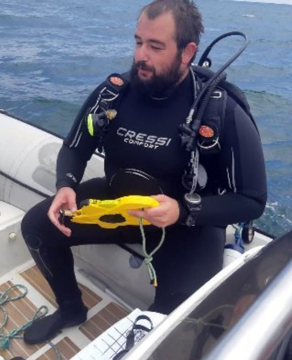

Experience supervising doctoral, Master thesis
and final Degree projects
ONGOING Ph.D'S THESIS

Project title: Decoding Individual Variability in Body and Otolith Shapes among Commercially Fish Species
Student: Javier
Supervisor: Joana Vasconcelos
Entities: University of Las Palmas of Gran Canaria / Universidade da Coruña
The institution where the student will pursue their Ph.D.: BIOCON, IU-ECOAQUA, University of Las Palmas of Gran Canaria
Ph.D: Oceanography and Global Change
The academic year when the Ph.D. program commences: 2023-2024
Duration: 5 years
ONGOING MASTER'S THESIS
Project title: Unravelling the key environmental drivers in the limpets of a highly anthropogenised region
Student: Olivia Martínez Ruiz
Supervisor: Rodrigo Riera / Co-Supervisor: Joana Vasconcelos
Entities: University of Las Palmas of Gran Canaria / Universidade da Coruña
The institution where the student will pursue their Master: BIOCON, IU-ECOAQUA, University of Las Palmas of Gran Canaria
Master: Marine Biology
Academic year: 2023-2024
ONGOING Final Degree Projects
Project title: Application of morphometry and shape analysis in the identification of coastal stocks
Student: María Cirera Díaz
Supervisor: Joana Vasconcelos
Entity: University of Las Palmas of Gran Canaria
City of entity: Las Palmas of Gran Canaria, Spain
Degree: Marine Sciences
Academic year: 2023-2024

Project title: Fecundity regulation of the blue Jack mackerel, Trachurus picturatus, from the Canary Islands (NE Atlantic)
Student: Pablo Jesús Angulo Falcón
Supervisor: Joana Vasconcelos
Entity: University of Las Palmas of Gran Canaria
City of entity: Las Palmas of Gran Canaria, Spain
Degree: Marine Sciences
Academic year: 2023-2024
Project title: Intraspecific variability in otoliths of Helicolenus dactilopterus from the NE Atlantic and Mediterranean Sea
Student: Rita Delia Santana Benítez
Supervisor: Joana Vasconcelos
Entity: University of Las Palmas of Gran Canaria
City of entity: Las Palmas of Gran Canaria, Spain
Degree: Marine Sciences
Academic year: 2023-2024
Final Degree Projects
Project title: Fecundity Regulation Strategy of the Limpet, Patella ordinaria, of Madeira Island (NE Atlantic)
Student: João Paulo Silva Ferro
Supervisor: Joana Vasconcelos / Co-Supervisor: Rodrigo Riera
Entity: University of Madeira
City of entity: Funchal, Região Autónoma da Madeira, Portugal
Academic year: 2021-2022
Obtained qualification: 18 (maximum score: 20)
Date of reading: 25/05/2022
Outputs
Vasconcelos, J., Sousa, R., Ferro, João, Pinto, A.R., Freitas, M., Riera, R. 2023. Fecundity, an overlooked life-history trait for coastal management of commercial molluscs?. Frontiers in Marine Science 10, 1173629. DOI: 10.3389/fmars.2023.1173629.
Vasconcelos, J., Ferro, João, Sousa, R., Pinto, A.R., Riera, R. 2023. Fecundity strategy of the highly exploited limpet Patella ordinaria from an oceanic archipelago. Regional Studies in Marine Science 60, 102849. DOI: 10.1016/j.rsma.2023.102849.
Ferro, João, Sousa, R., Riera, R., Freitas, M., Vasconcelos, J.. 2022. Fecundity strategy of the highly exploited limpet Patella ordinaria from an oceanic archipelago. International Symposium on Artisanal and Recreational Fishing in Islands Systems: Assessment, Vulnerabilities and management (IS-AR-FIS), Las Palmas de Gran Canaria, 6th -8th July 2022.
Other
Supervision
Erasmus Students
Project: Exploring the eco-morphology of Trachurus sp. otoliths.
Grant type: Erasmus+
Student: Fabiana Rosano
Supervisor: Joana Vasconcelos / Co-Supervisor: Víctor M. Tuset
Entity: University of Madeira, Las Palmas,Gran Canaria, Spain
Starting Date: 01/02/2024
Duration: 4 months
Funding Entity: University of Messina, Messina, Italy
Projects Grants
Project: Metacommunity dynamics of complex life cycle species in exploited ecosystems (EXPL/MAT-APL/0262/2021, LAPACOM)
Grant type: Research Grant
Student: Eros Fernando Geppi
Supervisor: Joana Vasconcelos (Project PI) / Co-Supervisor: Rodrigo Riera (Project Co-PI)
Entity: University of Madeira, Funchal, Madeira, Portugal
Starting Date: 07/11/2022
Duration: 5 months
Funding Entity: Fundação para a Ciência e a Tecnologia
Project: Metacommunity dynamics of complex life cycle species in exploited ecosystems (EXPL/MAT-APL/0262/2021, LAPACOM)
Grant type: Scientific Initiation Grant
Student: João Paulo Silva Ferro
Supervisor: Joana Vasconcelos (Project PI) / Co-Supervisor: Rodrigo Riera (Project Co-PI)
Entity: University of Madeira, Funchal, Madeira, Portugal
Starting Date: 01/05/2022
Duration: 3 months
Funding Entity: Fundação para a Ciência e a Tecnologia
External Practices
Project title: Unravelling the key environmental drivers in the limpets of a highly anthropogenised region
Student: Olivia Martínez Ruiz
Supervisor: Joana Vasconcelos / Co-Supervisor: Rodrigo Riera
Entities: University of Las Palmas of Gran Canaria / Universidade da Coruña
Institution where the externship occurred: BIOCON, IU-ECOAQUA, University of Las Palmas of Gran Canaria
Master: Marine Biology
Academic year: 2023-2024
Number of hours for the internship: 450 hours (equivalent to 18 ECTS credits)
Qualification: 10/10
Summer internship
Project title: Quantification of phenotypic variability in the otolith contour of mackerel, Scomber colias in Madeira Island (NE Atlantic)
Student: José Mateus Sousa Bento
Supervisor: Joana Vasconcelos
Entities: University of Madeira / Regional Directorate of the Sea
City: Funchal, Região Autónoma da Madeira, Portugal
Starting Date: 01/07/2022
Duration: 1 month
Funding Entity: Regional Youth Directorate of the Government of Madeira
Project title: Fecundity regulation strategy in limpets of the species Patella aspera from Madeira Island (NE Atlantic)
Student: Ricardo Rúben de Araújo Mota
Supervisor: Joana Vasconcelos
Entities: University of Madeira / Regional Directorate of the Sea
City: Funchal, Região Autónoma da Madeira, Portugal
Starting Date: 01/07/2022
Duration: 1 month
Funding Entity: Regional Youth Directorate of the Government of Madeira